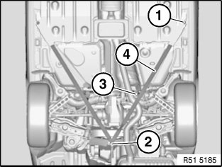
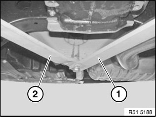

Structural Brace: Service and Repair
51 71 482 Removing And Installing/Replacing Left Or Right Trailing Link (On Rear Axle) (Up To 03/2007)

IMPORTANT:
Observe safety information for raising the vehicle
Driving without the trailing link is not permitted.

Release screws (1, 2, 3).
Remove trailing link (4).
Installation note:
Make sure screws are installed in correct positions.
- Screw (1) M12x35
Tightening torque 51 71 25AZ.
- Screw (2) M12x50
Tightening torque 51 71 26AZ.
- Screw (3) M10x25
Tightening torque 51 71 20AZ.

IMPORTANT:
Left trailing link (1) must be installed under right trailing link (2).